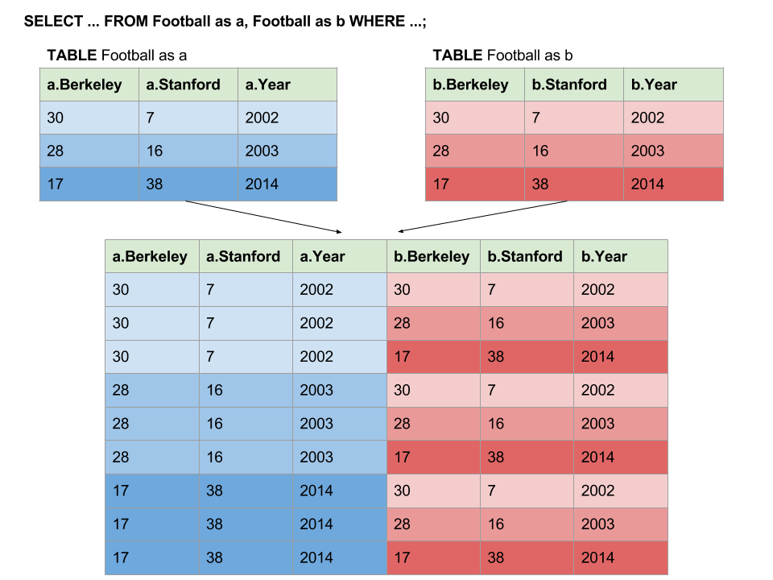

Homework 12
Due at 11:59:59 pm on 05/01/2019.
Instructions
Download hw12.zip. Inside the archive, you will find starter files for the questions in this homework, along with a copy of the OK autograder.
Submission: When you are done, submit with python3 ok --submit. You may submit more than once before the deadline; only the final submission will be scored. Check that you have successfully submitted your code on okpy.org. See this article for more instructions on okpy and submitting assignments.
Readings: This homework relies on following references:
Iterators
Remember the for loop? (We really hope so.) The object the for loop
iterates over must be an iterable! An iterable is a way of representing
explicit sequences (like lists or strings) as well as implicit sequences (like
the natural numbers 1, 2, 3, ...).
for elem in iterable:
# do somethingfor loops only work with iterables. This means the object you want to use a
for loop on must implement the iterable interface. To implement the
iterable interface, an object must define an __iter__ method that returns an
object that implements the iterator interface. To implement the iterator
interface, an object must define a __next__ method to compute and return the
next element in the sequence. If the iterator exhausts the sequence, it raises
StopIteration to send a signal to indicate that it reaches the end.
An iterable object can create an arbitrary amount of iterator objects. In addition, the iterators are independent of each other; in other words they can have a different position in the sequence.
Here is a table summarizing the required methods of the iterable and iterator interfaces/protocols. Python also has more documentation about iterator types.
| Iterable | Iterator |
|---|---|
__iter__: return a new iterator |
__iter__: must return itself |
__next__: return the next element,
or raise StopIteration |
In Python, an iterator must also be an iterable. In other words, it must have a
__iter__ method that returns itself (with the current state unaltered).
Analogy: an iterable is like a book (one can flip through the
pages) and an iterator is a bookmark (saves the position and can locate
the next page). Calling __iter__ on a book gives you a new bookmark
independent of other bookmarks, but calling __iter__ on a bookmark
gives you the bookmark itself, without changing its position at all.
Here is an example of a class definition for an object that implements the iterator interface:
class AnIterator:
def __init__(self):
self.current = 0
def __next__(self):
if self.current > 5:
raise StopIteration
self.current += 1
return self.current
def __iter__(self):
return selfLet's go ahead and try out our new toy.
>>> for num in AnIterator():
... print(num)
1
2
3
4
5
6This is somewhat equivalent to running:
t = AnIterator()
t = iter(t) # iter(t) is the same as t.__iter__()
try:
while True:
# next(t) is the same as t.__next__()
print(next(t))
except StopIteration as e:
passQuestion 1: Restart
Use OK to test your knowledge with the following What would Python print questions:
python3 ok -q restart -u
Try this!
>>> iterator = IteratorA()
>>> [num for num in iterator]Then again:
>>> [num for num in iterator]This happens because the instance variables are not reset
each time a for loop is started. Therefore, when a StopIteration
exception is raised at the end of the first for loop it certainly
will be raised immediately at the beginning of the second.
With that in mind, try writing an iterator that "restarts" every time
it is run through a for loop.
class IteratorRestart:
"""
>>> iterator = IteratorRestart(2, 7)
>>> for num in iterator:
... print(num)
2
3
4
5
6
7
>>> for num in iterator:
... print(num)
2
3
4
5
6
7
"""
def __init__(self, start, end):
"*** YOUR CODE HERE ***"
def __next__(self):
"*** YOUR CODE HERE ***"
def __iter__(self):
"*** YOUR CODE HERE ***"Use OK to test your code:
python3 ok -q IteratorRestartGenerators
A generator function returns a special type of iterator called
a generator object. Such functions can be written using a yield
statement:
def <generator_fn_name>():
<somevariable> = <something>
while <predicate>:
yield <something>
<increment somevariable>Calling a generator function (a function with a yield statement in it) makes it return a generator object rather than executing the body of the function.
The reason we say a generator object is a special type of iterator is that it has all the properties of an iterator, meaning that:
- Calling the
__iter__method makes a generator object return itself without modifying its current state. - Calling the
__next__method makes a generator object compute and return the next object in its sequence. If the sequence is exhausted,StopIterationis raised. - Typically, a generator should not restart unless it's defined that way. But
calling the generator function returns a brand new generator object (like
calling
__iter__on an iterable object).
However, they do have some fundamental differences:
- An iterator is a class with
__next__and__iter__explicitly defined, but a generator can be written as a mere function with ayieldin it. __iter__in an iterator usesreturn, but a generator usesyield.A generator "remembers" its state for the next
__next__call. Therefore, the first__next__call works like this:- Enter the function, run until the line with
yield. - Return the value in the
yieldstatement, but remember the state of the function for future__next__calls.
And subsequent
__next__calls work like this:- Re-enter the function, start at the line after
yield, and run until the nextyieldstatement. - Return the value in the
yieldstatement, but remember the state of the function for future__next__calls.
- Enter the function, run until the line with
Use OK to test your knowledge with the following What would Python print questions:
python3 ok -q generators -u --local
def generator():
print("Starting here")
i = 0
while i < 6:
print("Before yield")
yield i
print("After yield")
i += 1>>> g = generator()
>>> g # what type of object is this?
<generator object ...>
>>> g == iter(g) # equivalent of g.__iter__()
True
>>> next(g) # equivalent of g.__next__()
Starting here
Before yield
0
>>> next(g)
After yield
Before yield
1
>>> next(g)
After yield
Before yield
2Trace through the code and make sure you know where and why each statement is printed.
You might have noticed from the Iterators section that IteratorB, which didn't
define a __next__ method, failed to run in the for loop. However, this is
not always the case.
class IterGen:
def __init__(self):
self.start = 5
def __iter__(self):
while self.start < 10:
self.start += 1
yield self.start
for i in IterGen():
print(i)Why does this iterable work without defining a __next__ method?
The for loop only expects the object returned by __iter__ to have a
__next__ method. The __iter__ method is a generator function because of the
yield statement in the body. Therefore, when __iter__ is called, it returns
a generator object, which you can call __next__ on.
Question 2: Merge
Implement merge(s0, s1), which takes two iterables s0 and s1 whose
elements are ordered. merge yields elements from s0 and s1 in sorted
order, eliminating repetition. You may also assume s0 and s1 represent infinite
sequences; that is, their iterators never raise StopIteration.
See the doctests for example behavior.
def merge(s0, s1):
"""Yield the elements of strictly increasing iterables s0 and s1 and
make sure to remove the repeated values in both.
You can also assume that s0 and s1 represent infinite sequences.
>>> twos = scale(naturals(), 2)
>>> threes = scale(naturals(), 3)
>>> m = merge(twos, threes)
>>> type(m)
<class 'generator'>
>>> [next(m) for _ in range(10)]
[2, 3, 4, 6, 8, 9, 10, 12, 14, 15]
"""
i0, i1 = iter(s0), iter(s1)
e0, e1 = next(i0), next(i1)
"*** YOUR CODE HERE ***"Use OK to test your code:
python3 ok -q mergeSQL
Working with the Chinook Dataset
The Chinook dataset is a sample dataset that you'll be working with in this homework. It contains data about many different musical albums, as well as the tracks and musical artists on those albums. To simplify things, we've only given you the artists, albums, and tracks tables (note that this means that some columns in the tracks table, such as genreId and mediaTypeId won't reference anything). We've also cleaned up the data for you and truncated the tracks table (it used to be several thousand records long!). Let's take a look at the different tables we've given you:
artistsartistId: the unique ID number assigned to this artistname: the name of this artist
albumsalbumId: the unique ID number assigned to this albumtitle: the title of this albumartistId: the unique ID of the artist on this album
trackstrackId: the unique ID number assigned to this trackname: the name of this trackalbumId: the unique ID of the album that this track is onmediaTypeId: don't worry about this!genreId: don't worry about this!composer: the composer of this trackmilliseconds: the length of this track in millisecondsbytes: the size of this track file in bytesunitPrice: the price of this track
You will write all of your solutions in the starter file provided. As with other labs, you can test your solutions with OK. In addition, you can use either of the following commands. You may need to refer to the Usage section to find the appropriate command for your OS:
sqlite3 < hw12.sql
sqlite3 --init hw12.sqlQuestion 3: What Would SQL print?
First, load the tables into sqlite3. If you're on Windows or Mac OS X (Mavericks or older), use the following command:
$ ./sqlite3 --init hw12.sqlIf you're on Ubuntu or Mac OS X (Yosemite or newer), use:
$ sqlite3 --init hw12.sqlBefore we start, inspect the schema of the tables that we've created for you:
sqlite> .schemaThis tells you the name of each of our tables and their attributes.
Let's also take a look at some of the entries in our table. There are a lot of entries though, so let's just output the first 20:
sqlite> SELECT * FROM tracks LIMIT 20;If you're curious about which artists/albums/tracks we've included,
open up chinook.sql in your favorite text editor and take a look!
For each of the SQL queries below, decide to yourself and/or your partner what the query is looking for, then try running the query yourself and see!
sqlite> SELECT * FROM artists; -- This is a comment. * is shorthand for all columns!
selects all records from artists;
sqlite> SELECT name FROM tracks WHERE bytes > 3000000; -- There are 1000000 bytes in a megabyte.
selects the name of all tracks that are larger than 3 Mb
sqlite> SELECT name, composer FROM tracks WHERE albumId = 57 AND milliseconds > 180000; -- How many milliseconds are in a minute?
selects the name and composer of all tracks longer than 3 minutes on the album with albumID = 57Question 4: Get rid of the fluff!
Write a SQL query to create a table that contains just the name and unitPrice
of each track in the tracks table.
You should get the following output:
sqlite> SELECT * FROM pricing LIMIT 10;
For Those About To Rock (We Salute You)|0.99
Fast As a Shark|0.99
Restless and Wild|0.99
Princess of the Dawn|0.99
Put The Finger On You|0.99
Let's Get It Up|0.99
Inject The Venom|0.99
Snowballed|0.99
Evil Walks|0.99
C.O.D.|0.99CREATE TABLE pricing as
select "REPLACE THIS LINE WITH YOUR SOLUTION";Use OK to test your code:
python3 ok -q pricingQuestion 5: Long songs...
Now that we have learned how to select columns from a SQL table, let's filter the results to see some more interesting results!
Write a SQL query to create a table that contains the names of all tracks longer than 6 minutes (that's a long song!)
You should get the following output:
sqlite> SELECT * FROM long LIMIT 10;
Princess of the Dawn
Let There Be Rock
Overdose
Livin' On The Edge
You Oughta Know (Alternate)
Love, Hate, Love
Master Of Puppets
Harvester Of Sorrow
Wherever I May Roam
Snoopy's search-Red baronCREATE TABLE long as
select "REPLACE THIS LINE WITH YOUR SOLUTION";Use OK to test your code:
python3 ok -q longQuestion 6: Biggest Song
Which song takes up the most space (as a file)? Let's find out! (Incidentally this is also the longest song in our database.)
Write a SQL query with the columns name and milliseconds to try to determine what the largest song file is. In order to make it
easier for us to inspect these values, use ORDER BY to sort the numerical values
and LIMIT your result to just the biggest track.
You should get the following output:
sqlite> SELECT * FROM largest;
How Many More Times|711836CREATE TABLE largest as
select "REPLACE THIS LINE WITH YOUR SOLUTION";Use OK to test your code:
python3 ok -q largestJoins
We can use joins to include rows from another table that satisfy the where
predicate. Joins can either be on different tables, or the same table if we
include an alias. Here we are referencing the football table twice, once as
the alias a and once as the alias b.
sqlite> SELECT a.Berkeley - b.Berkeley, a.Stanford - b.Stanford, a.Year, b.Year
...> FROM Football as a, Football as b WHERE a.Year > b.Year;
-11|22|2014|2003
-13|21|2014|2002
-2|9|2003|2002What is this query asking for?
You may notice that it does not seem like we actually performed any operations
to do the join. However, the join is implicit in the fact that we listed more
than one table after the FROM. In this example, we joined the table Football
with itself and gave each instance of the table an alias, a and b so that
we could distinctly refer to each table's attributes and perform selections and
comparisons on them, such as a.Year > b.Year.
One way to think of a join is that it produces a cross-product between the two tables by matching each row from the first table with every other row in the second table, which creates a new, larger joined table.
Here's an illustration of what happened in the joining process during the above query.

From here, the select statement examines the joined table and selects the values
it desires: a.Berkeley - b.Berkeley and a.Stanford - b.Stanford but only
from the rows WHERE a.Year > b.Year. This prevents duplicate results from
appearing in our output!
Question 7: Long songs on albums
We know which songs are long, but now we want to know which albums have long songs on them!
Write a SQL query to create a table that contains the titles of all albums with tracks longer than 6 minutes on them.
You should get the following output:
sqlite> SELECT * FROM long_album LIMIT 10;
Restless and Wild
Let There Be Rock
Let There Be Rock
Big Ones
Jagged Little Pill
Facelift
Plays Metallica By Four Cellos
Plays Metallica By Four Cellos
Plays Metallica By Four Cellos
The Best Of Billy CobhamNote that albums can appear more than once in this table. Why is this? What does the number of times an album appears tell you?
CREATE TABLE long_album as
select "REPLACE THIS LINE WITH YOUR SOLUTION";Use OK to test your code:
python3 ok -q long_albumAggregate Functions
So far, we haven't given you a good way of counting the number of rows that fit certain criteria.
Bring in SQL aggregation, which is commonly used to aggregate values in order to answer these types of questions!
In order to perform SQL aggregation, we need to group rows in our table by one or more attributes. Once
we have groups, we can aggregate over the groups in our table and find things like the maximum value (MAX),
the minimum value (MIN), the number of rows in the group (COUNT), the average over all of the values
(AVG), and more! SELECT statements that use aggregation are marked by two things: an aggregate function
(MAX, MIN, COUNT, AVG, etc.) and a GROUP BY clause. For example, if we wanted to see how many
tracks are on each album (identified by albumId):
sqlite> SELECT albumId, max(milliseconds) FROM tracks GROUP BY albumId LIMIT 10;
1|343719
3|375418
4|369319
5|381231
6|491885
7|387134
9|436453
10|343457
11|309786
12|163265So the longest song on the album with albumId 57 is 343719 ms long!
This SELECT statement groups all of the rows in our table tracks by albumId. Then, within each
group, we perform aggregation by MAXing over the attribute milliseconds. By selecting albumId and MAX(milliseconds),
we then can see the greatest milliseconds for any track for a given albumId.
When using an aggregate function in your
SELECTstatement, any other columns in theSELECTstatement must be in theGROUP BYstatement!
Question 8: Number of songs on each album
Write a SQL query to create a table that contains the albumId and number of songs
on the album with that albumId. HINT: Remember that count(*) will count the
number of rows in each group of a GROUP BY statement.
You should get the following output:
sqlite> SELECT * FROM track_count LIMIT 10;
1|10
3|3
4|8
5|15
6|13
7|12
9|8
10|14
11|12
12|12CREATE TABLE track_count as
select "REPLACE THIS LINE WITH YOUR SOLUTION";Use OK to test your code:
python3 ok -q track_countQuestion 9: Counting albums
So far, we haven't yet considered the artists table. What if we want to know
how many albums each artist has released?
Write a SQL query to create a table that contains the name of each artist along
with how many albums that artist has released (that are in the albums table).
You should get the following output:
sqlite> SELECT * FROM album_count LIMIT 10;
Aaron Copland & London Symphony Orchestra|1
Aaron Goldberg|1
Academy of St. Martin in the Fields & Sir Neville Marriner|1
Academy of St. Martin in the Fields Chamber Ensemble & Sir Neville Marriner|1
Academy of St. Martin in the Fields, John Birch, Sir Neville Marriner & Sylvia McNair|1
Academy of St. Martin in the Fields, Sir Neville Marriner & Thurston Dart|1
Accept|2
Adrian Leaper & Doreen de Feis|1
Aerosmith|1CREATE TABLE album_count as
select "REPLACE THIS LINE WITH YOUR SOLUTION";Use OK to test your code:
python3 ok -q album_countQuestion 10: Busiest artists
How many songs have each artist produced? Write a SQL query to create a table containing artists' names and the number of tracks that they're produced (we'll assume an artist produced a track if it appears on one of their albums).
HINT: You may need all three tables!
You should get the following output:
sqlite> SELECT * FROM busiest_artists LIMIT 10;
AC/DC|18
Accept|3
Aerosmith|15
Alanis Morissette|13
Alice In Chains|12
Antônio Carlos Jobim|17
Apocalyptica|8
Audioslave|26
BackBeat|12
Billy Cobham|8CREATE TABLE busiest_artists as
select "REPLACE THIS LINE WITH YOUR SOLUTION";Use OK to test your code:
python3 ok -q busiest_artistsNote that computing a join over all three tables is very expensive! To see how many rows are considered, run the following query:
SELECT count(*) FROM artists, albums, tracks;
There may be a slight delay (because you're computing so many different candidate rows!).